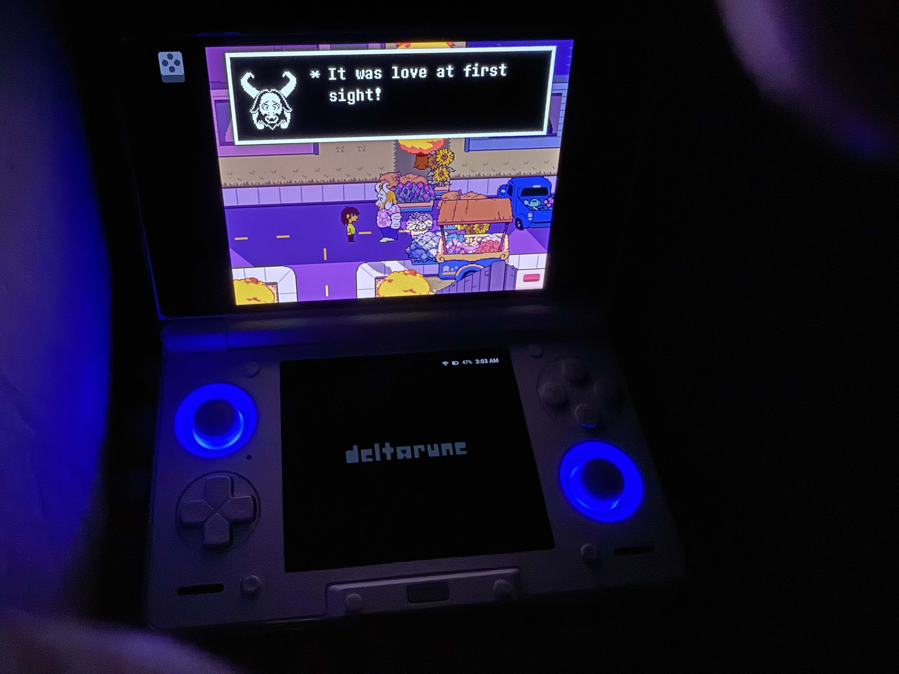
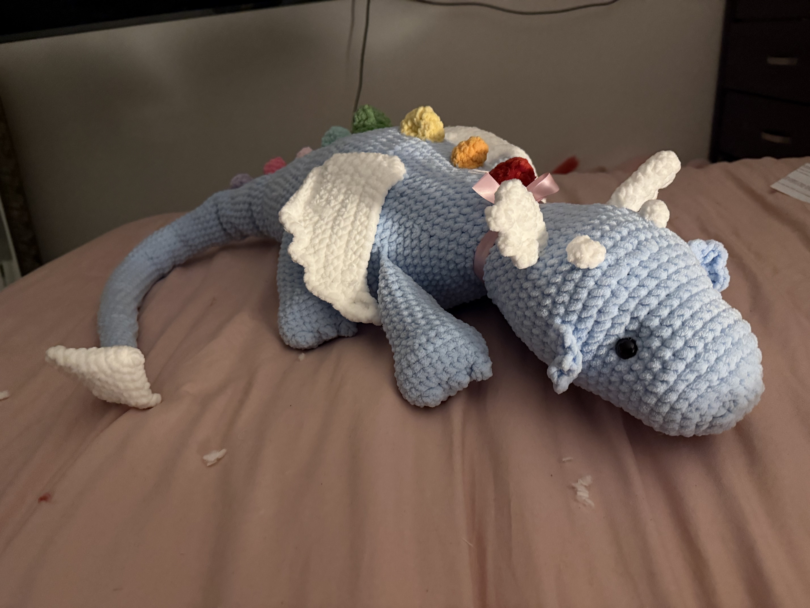
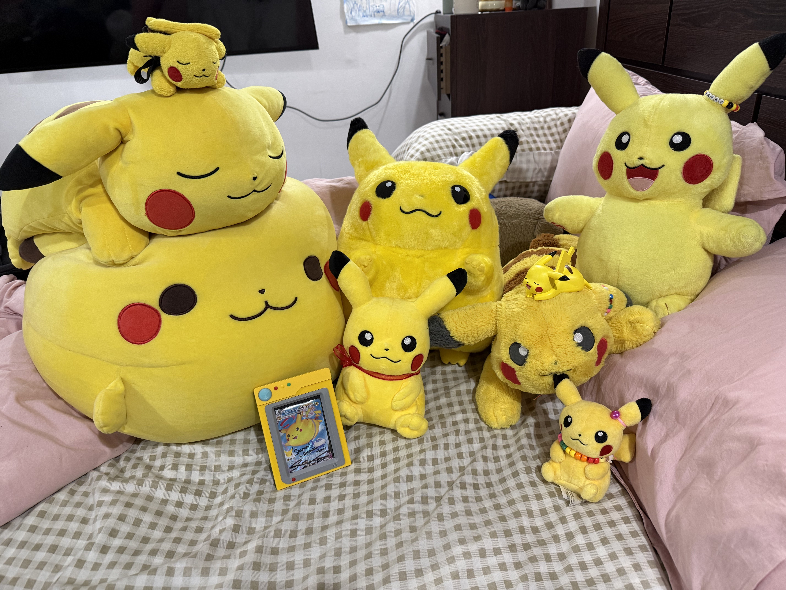
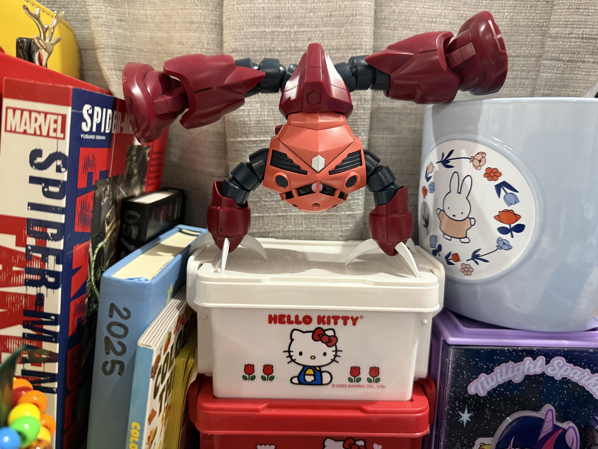

★ WELCOME TO MY WEBSITE ★
A collection of my favorite things, memories, and little treasures.
ENTER GALLERY →Welcome to my personal corner of the internet! This website is a small collection of things I enjoy, including games, plushies, and gumpla.
Some of my favorite things!

This is my retro handheld, the AYN THOR! A retro handheld is a portable gaming device that lets you play older video games from consoles like the Nintendo DS, 3DS, and Game Boy through emulation. Even though I own a 3DS, I enjoy playing on this one because I can play games from different consoles on a single device. I also use it to play newer games, like Deltarune, which I finished last summer. It’s become one of my favorite devices to play games on!

One of my favorite little companions. I learned to crochet over the summer and Noko is one of the biggest projects I worked on so far, I have made more plushies but Noko is one of my favorites.

A collection of adorable electric friends. I like to collect Pikachu related merch because Pikachu has always been my favorite Pokemon.

This is my most recent build among my gumpla MSM-07S Z'Gok better known as Z'Gok or the crab. Also know Gunpla plastic model kits, they are basically model kits inspired by the Gundam anime.
THANKS FOR VISITING!
You've reached the end of my gallery.
★ COME BACK SOON ★